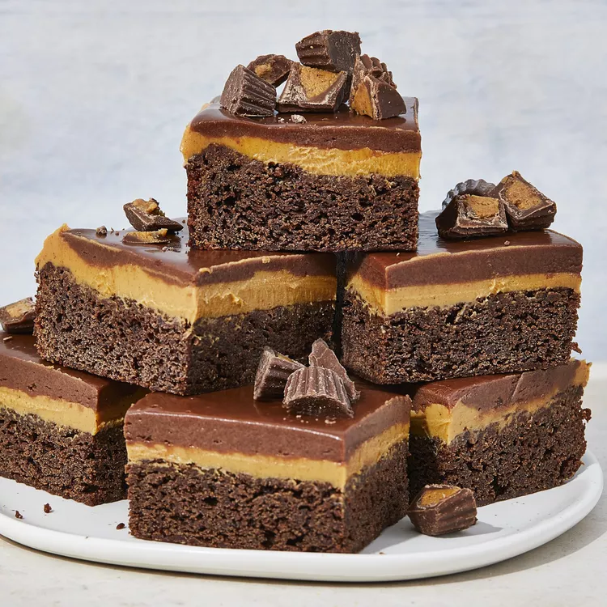

Chocolate cake, chocolate frosting, but with what a difference. Peanut butter is the magic ingredient. It is spread between the cake and the frosting.
Combine flour, white sugar, and baking soda in a large mixing bowl; set aside.
Melt 1 cup butter or margarine in a heavy saucepan; stir in 1/2 cup cocoa. Stir in buttermilk until well blended. Cook over medium heat, stirring constantly, until mixture boils. Remove from heat. Mix into flour mixture, stirring until smooth. Stir in 1 teaspoon vanilla. Pour batter into a greased and floured 13 x 9 inch baking pan.
Bake at 350 degrees F (175 degrees C) for 20 to 25 minutes, or until an inserted wooden pick comes out clean. Cool 10 minutes on a wire rack. Carefully spread peanut butter over warm cake. Cool completely.
To Make Frosting: Combine 1/2 cup butter or margarine, 1/4 cup cocoa, and buttermilk in a small sauce pan. Bring to a boil over medium heat, stirring constantly. Pour over confectioners' sugar, stirring until smooth. Stir in 1 teaspoon vanilla. Spread chocolate frosting over peanut butter on cake. Cut into squares.